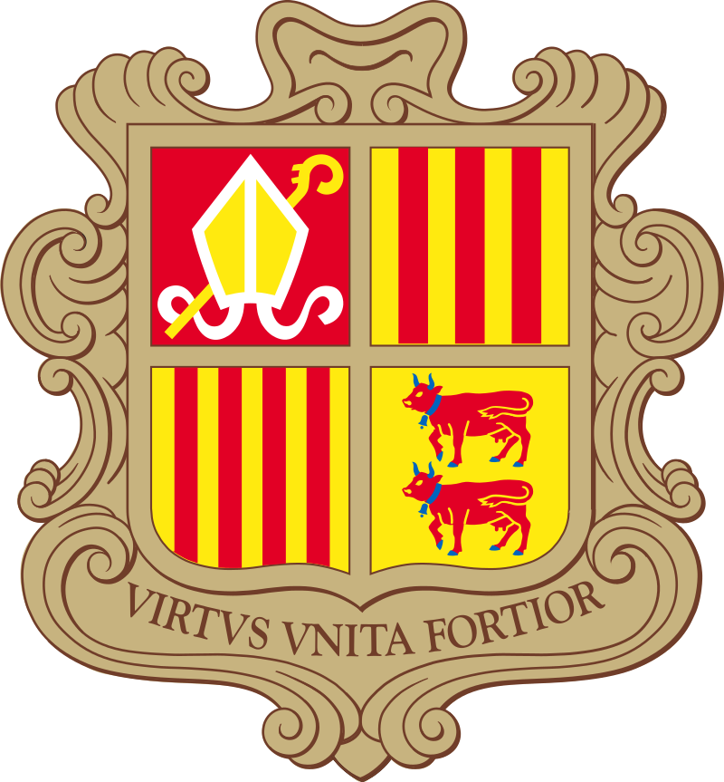
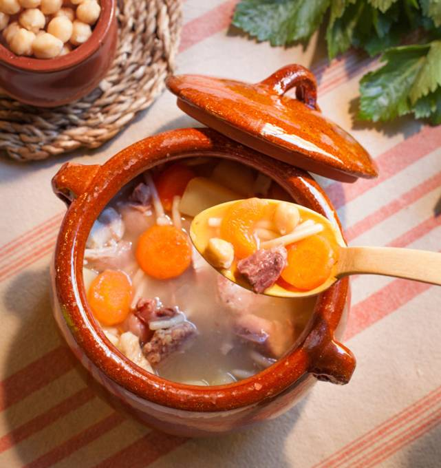

Escudella


A traditional Andorran dish best served during the winter months, especially in January when Andorrans celebrate St. Anthony and St. Sebastian. However, it can also be eaten on any day!
Ingredients
- Chicken: 1/4
- Bacon: 150 g
- Beef Shank: 200 g
- Beef Bones: 1
- Veal Bones: 3
- Tender Pork Backbones: 3
- Pork Ear
- Oxtail: 1
- Cabbage: 1/2
- Celery: 1
- Onion: 1
- Carrots: 2
- Leek: 1
- Potatoes: 3
- White Beans: 100 g
- Chickpeas: 100 g
- Thick Noodles or Rice: 100 g
- Pork Suet: 50 g
- Pumpkin: 150 g
- White Sausage: 100 g
- Black Onion Sausage: 100 g
- Salt
Steps
- Chop all the meats except the sausages.
- Bring 6 litres of water to a boil and add the diced onions and celery, sliced carrots, chickpeas and beans (which you soaked the night before), the bones, the pork suet and chopped meat.
- After boiling for 2 hours, add the salt, cut the white cabbage into small pieces and the sausages into thick slices.
- After 20 minutes, add the diced potatoes and pumpkin, the noodles or the rice and leave it on the fire for another 20 minutes.
- Before serving, remove the celery and the larger bones and, from these, cut the meat into cubes and add it back to the pot.
- Let the escudella rest for about 5 minutes and then serve. A really exquisite dish!
Source: Escudella: A Winter Stew